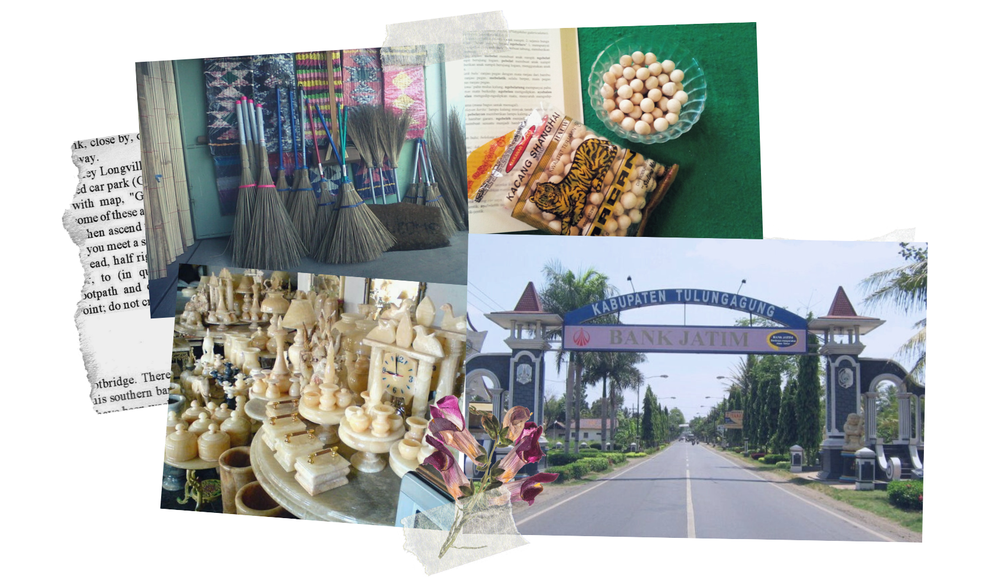

H O M E T O W N
Tulungagung is a regency (kabupaten) in East Java, Indonesia.
Located 154km southwest of Surabaya, the capital city of Each Java Province.
Tulungagung has 19 sub-districts (kecamatan) or 127 villages in total.
Tulungagung back then was only a small area, and the larger one was called Ngrowo.
Basically Tulungagung means a great water resource in old Javanese language,
and indeed it was back then and still for now. In the capital of Tulungagung,
there is Ngrowo River, subpart of Brantas River and it divides the capital of Tulungagung
into northern part and southern part. Tulungagung also has Wonorejo Dam with about 122 million meters cubic water capacity,
this dam becomes one of the biggest dam in Indonesia, even in South-East Asian. Now on, Wonorejo Dam is alsofunctioned as one of tourism object in Tulungagung.
The northwest part of Tulungagung is a portion of Wilis-Liman mountain range;
the central part is lowland; the southern part is portion of rocky Kapur Kidul mountain range
which is also an enormous source of marble. For that, Tulungagung also known as a major producer of
marble slabs and marble handicraft product. Many home-based marble craft industry may be find in Campur Darat Subdistrict.

Beside marble craft workshops, tourists can find small and medium enterprises that focus on manufacturing housewares
such as door mats and brooms made of natural coconut husks, recycled fabrics or other natural materials in Plosokandang district.
Furthermore, hand-painted batik and ready-to-wear batik sewing workshops can be found scattered in some parts of the city.
As for me, Ngunut is where I live this past 21 years plus one week of my life when i write this post^^
Ngunut is located 12km away from the downtown. yes its quite far, but if u think its a rural area and
you would find a calm, not a busy area, u're wrong. Ngunut is a busy industrial area. There are plenty industries,
from home industries or even big machinery industries. In Ngunut Subdistrict travelers can find knapsack, belt, and traditional fried snack industries.
Some of the popular snacks are kacang Shanghai and kacang telor (individual peanut rolled in garlic-seasoned flour batter or egg flour batter)